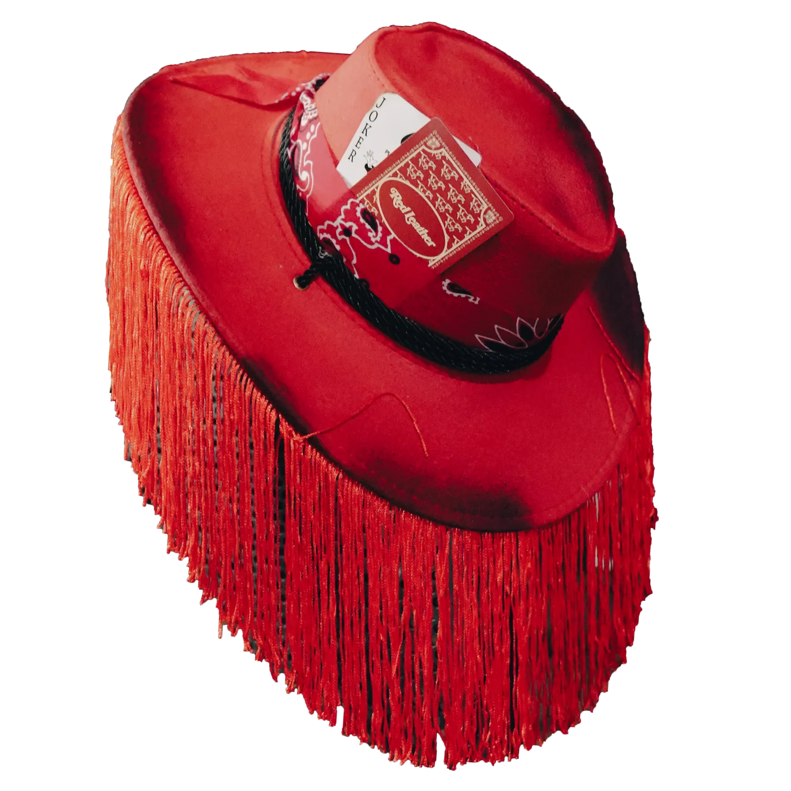

menu

Red leather l'artiste de demain
Si vous êtes ici vous devez surement connaitre Red leather un artiste americain qui fait des chansons de style rock country l'un de ces sons les plus connus "can't get high" a plus de 1,1 millions d'écoute sur youtube.
Je partage avec vous sur ce site le parcours de Red leather
et vous donnerais quelque liens.
Red Leather est un artiste énigmatique qui compose des sons innovants et sincères. Mais Qui est Red Leather ? Red Leather est un artiste mystérieux. sa musique est un mélange d'électronique, de hip-hop, rock, countrie et de musique expérimentale, créant des sons puissants et innovants. Difficile de savoir d'où vient cet artiste même si des rumeurs disent que il est originaire de reno aux Nevada, ni quel âge il a. Une chose est sûre : Red Leather fait sensation dans l'industrie musicale grâce à son son unique.
La carrière de Red Leather a débuté en 2020 avec la sortie de son premier single « Lonely ». Le titre a été écouté des millions de fois sur les plateformes de streaming et a attiré l'attention de nombreux professionnels de l'industrie musicale. Depuis, Red Leather a continué à sortir des singles et des EP, chacun repoussant les limites du son et du genre. En 2021, il a sorti son premier album, « The Sound of Now », qui a été salué par la critique et les a propulsés sous les projecteurs.
Le son de Red Leather est un mélange d'électronique, de hip-hop et de musique expérimentale. Leurs morceaux présentent souvent des lignes de basse puissantes et des refrains accrocheurs, complétés par des techniques de production avant-gardistes. Ils collaborent souvent avec d'autres producteurs pour créer des rythmes originaux et uniques. Les paroles de Red Leather sont également créatives et stimulantes, mêlant introspection et critique sociale.
Depuis leurs débuts en 2020, Red Leather a rapidement conquis une communauté de fans fidèles. Leur musique a figuré sur plusieurs playlists Spotify et leur a valu la reconnaissance de publications majeures comme Pitchfork et Consequence of Sound. Avec d'autres sorties à venir, Red Leather est certain de continuer à exercer une influence sur l'industrie musicale pour les années à venir.
a gauche vous pouvez observer la couverture de son album reno !
il possed un stye particulier et porte un chapeaux rouge qui couvre son visage comme celui ci dessous 